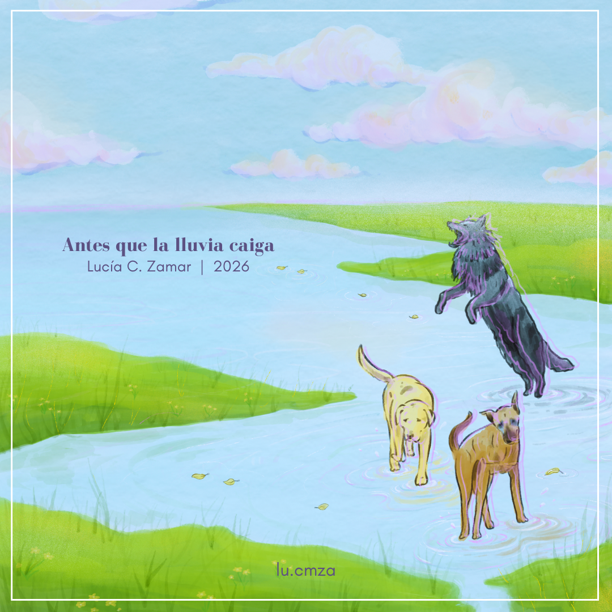

EP · 2026 · Música de cámara
Antes que la lluvia caiga, es una plegaria. Un deseo que hago cada vez que me detengo a contemplar, con la certeza de que la eternidad se vive en el presente. Cinco movimientos sostenidos por el cuarteto de cuerdas Trifulca Música Ciudadana en cuerdas y Valentina Finzi en el piano.
Lucía C. Zamar
Selección
Obras · 2026 → 2019
Arrastrá, deslizá o usá las flechas para transitar el territorio.